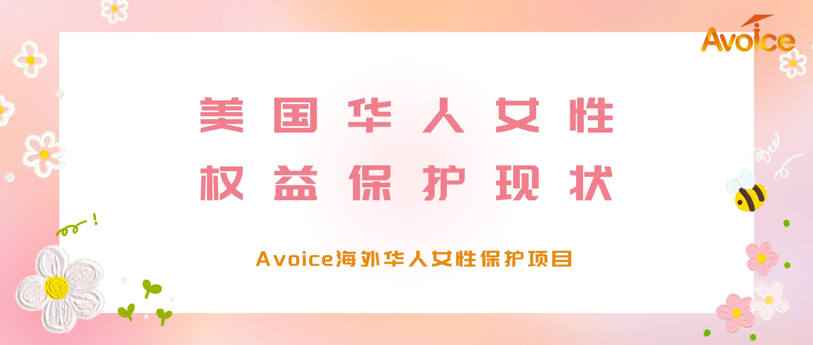
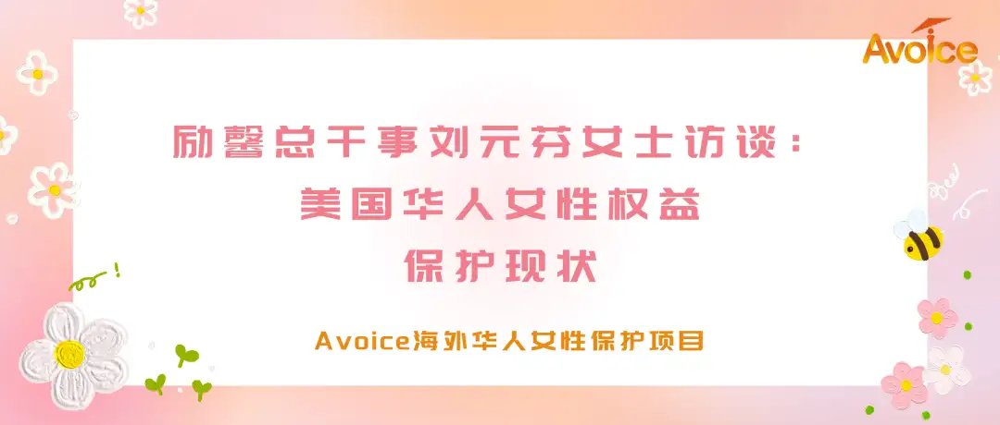
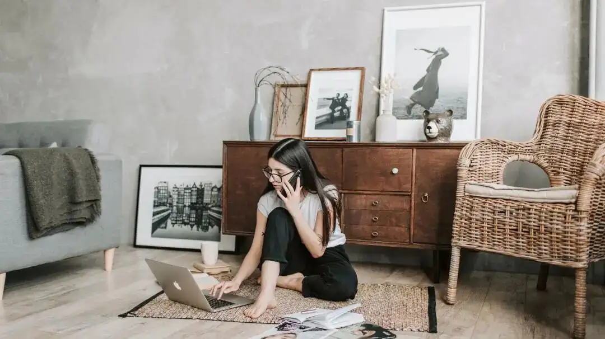

引言：
“她是我老婆，为什么不能打！”
“……丈夫要杀我，我带着孩子逃出来，不知道还能去哪儿……”
这是家暴亲历者的叙述，也是纽约励馨妇幼关怀中心介入的真实案件。
帮助了2000+名女性的纽约励馨妇幼关怀中心（下文简称“励馨”）成立于2004年，由台湾励馨基金会与纽约华人女性群体共同创立。
成立十八年来，励馨服务的主要对象是经历过家庭暴力、儿童虐待、性侵害、人口贩卖与针对亚裔暴力的受害者，本着公益组织的博爱精神，励馨致力于为需要帮助的人们提供关怀和服务。励馨希望通过努力，帮助受害者的身心得以恢复和重建。
励馨在2011年7月创立了第一间提供中文服务的收容所——“希望之家（Garden of Hope）”，截至目前，已为数百名因遭受家庭暴力或虐待而无家可归的女性和儿童提供了安全的庇护。 励馨为受害者提供免费的危机干预、咨询、庇护、支持小组、法律宣传、个案管理、儿童和青年项目等各类服务。过去十几年中，逾两千名女性和儿童因此受益。同时，励馨正在不断扩大机构在社区的影响力，帮助受害者摆脱暴力，并获得身心的彻底恢复。机构通过为受害女性的生活注入希望来重建她们的自尊与独立人格，以积极应对家庭暴力、性侵、人口贩运和反亚裔暴力等违法行为。
Avoice这次很荣幸邀请到励馨总干事刘元芬女士，共同探讨美国华人女性权益保护的现状与未来。
“疫情之后，家暴报案数增长了三倍”
据刘女士介绍，自2020年初美国新冠疫情爆发以来，励馨服务对象总数基本不变，但家暴案件较疫前同期增加了三倍，如此惊人的数字，不禁令人唏嘘。每个家庭的“矛盾冲突”各不相同，长期的疫情影响，让内部与外部因素叠加，使受害者遭受了更严重的伤害。
疫情初期，身处异地的家人常常会因为如何分配和使用政府的经济补助而起争执；孩子在家上网课、夫妻双方居家工作、对疫情趋势的恐惧等等疫情带来的负面影响，导致种种矛盾冲突常常一触即发；许多原本应当接受专业心理治疗、定期服药的群体，由于相关服务停摆也没能及时得到治疗，从而引发家庭冲突的爆发。
疫情期间，法律服务效率明显降低。刘女士告诉我们，虽然家暴案件的施暴者最终会被逮捕，但各州法律在受害者保护令时效方面的规定各不相同，如果警察不及时逮捕施暴者，受害者就拿不到保护令，依旧生活在恐惧与无助当中。同时，受疫情影响，法院尚未完全开放，线上法庭多用于处理紧急案件，导致许多案件需要等待排期。很多长达一年的等待期加剧了家庭内部的矛盾冲突与负面情绪。
“家和万事兴”——华人女性的隐忍观
世界卫生组织和联合国妇女署于2021年3月联合发布的一份报告指出，全球有三分之一 的女性在其一生中会遭受来自亲密伴侣的身体或性暴力或非伴侣的性暴力。励馨经过调查发现，华人群体也不例外。在励馨帮助过的案例当中，不少施暴者仅仅将家暴视为家庭事务，认为对个体的伤害不应被暴露于家庭之外，更无需他人插手介入，无论发展至何种严重程度，都可以被“家庭”这一“封闭”的场域消解。对施暴者而言，他们并不是不明白社会规范乃至法律对家暴的态度。但他们允许自己对伴侣使用暴力，就像人们允许自己随地扔个垃圾一样，受害者的个体权利在“家庭”的外衣下被剥夺了。于是，施暴者无所畏忌，家庭暴力亦变本加厉。
刘元芬女士表示，基于“家丑不可外扬”、“家和万事兴”、“不闹出大事便不报警”等传统观念，许多华人女性即使遭受了家庭暴力，也会刻意隐瞒，所以实际上发生的家暴事件数量要远多于报警数量。
纽约警方每年至少受理4000起家暴案件，而许多华人社区女性由于语言不通，投诉无门。目前，纽约有一千多个庇护床位，而提供中文支持服务的床位仅有十多个，专为华裔女性服务的求助站更是寥寥无几。
华裔女性对家庭暴力认知程度较低，经常由第三方保护机构介入后，才意识到家暴的存在。遭受暴力的女性亦少主动求救，除非到了不可挽回的地步，比如生命受到威胁、暴力已造成了严重的生理损伤。刘女士表示，每个案件不同，不离开家庭并不意味着她们不想离开或接受家暴，而是离开对她们来说，是一场更大的冒险。如果真的下定决心带着孩子离开，如何解决生活问题，是她们来所是一个难题。实际上，大部分母亲都希望能够拿到孩子的监护权，但现实情况是，许多母亲由于没有独自抚养孩子的经济能力而不得不放弃监护权。
两性经济不平等加重女性负担

在纽约，单亲妈妈独自养娃十分艰难。疫情使女性获得平等收入的机会减少，性别平等鸿沟进一步扩大。 根据2021年的数据显示，美国女性劳动参与率已降至56%以下，至少250万名女性失业，许多遭受家暴的母亲失去收入来源，支付赡养费的父亲也失业，家庭陷入经济危机后，女性没有住处，只能与孩子暂时栖身红十字会提供的临时庇护所，同时还要承受施暴者的威胁和恐吓。
学校和幼儿园关闭或提早放学，意味着有孩子的家庭需要专人照顾孩子，而女性往往比男性更愿意主动牺牲工作，承担更多的看护责任。不少女性为了家庭舍弃了工作，儿童看护机构雇员女性居多，但由于机构暂停运营，她们也不得不暂时失业。
对于单身母亲而言，除非居家办公或弹性工作，否则家中无人看管早放学的孩子。若是请日托或保姆，母亲微薄的收入又无力负担，这一两难境地使得她们在工作与育儿间无法做出抉择。
励馨帮助女性就业，为这些单身母亲打开了一个新世界。机构会帮助她们找到工作内容相对简单、时间安排较为弹性的工作，从而能让妈妈们灵活安排育儿与工作的时间。机构还会给她们支付学费和报考相关证照费用，帮助她们恢复和重建生活。许多受过励馨帮助的女性之间也会互相帮助，这样友好的女性互助精神和行动着实应该鼓励和发扬 。
主动使用法律维权：任重而道远
谈及励馨提供的法律援助，刘女士表示，法律知识的缺失，可能使受害人花费更多精力做无用功，甚至事与愿违。
比方说，70%的受害人打电话给励馨，希望励馨可以帮助销案，给作为施暴者的丈夫多一次机会，不影响申请绿卡。然而美国法律规定，受害人只能作为证人，不能取消案件。当证人对部分女性来说压力很大，加之法律程序复杂，许多深受精神折磨的受害者不堪重负，抱着“忍一时风平浪静”的想法，选择继续在暴力环境中苟延残喘。
针对儿童监护权问题，美国主流文化认为，“如果妈妈不能保护孩子，便没有资格获得小孩的监护权。”法院对受害者发出人身保护令后，若受害者仍允许施暴者与孩子接触，经儿童服务管理局(ACS)专员发现，将认定受害者没有能力保护孩子，并将孩子带走。
检察官与法官的态度也很重要。检察官如果觉得这个案子起诉意义不大，通常不会再继续。纽约有五大区，各区法官态度不同，有的法官对新移民比较有同理心，有的法官对新移民认识不深，觉得“你被打成这样，为什么还留在家里”，并建议受害者看心理医生——这些不同的文化差异都会对审判结果造成影响。
每一年纽约地区家暴案件数量高达27万起，其中至少有5000起案件涉及华人女性，大部分受害人需要的帮助都跟刑事法庭与刑事案件赔偿相关。来到励馨寻求帮助的基本是相对弱势的女性群体，由于语言不通等情况，励馨会直接帮助她们报警、申请保护令，并为她们寻找安全庇护所。
励馨的志愿者律师团队会为受害者提供不同的解决方案，供受害者选择，励馨的工作人员也会全程陪伴受害者，例如打官司时，对方有经济基础的，律师往往会要求检查受害者的精神状态，励馨的工作人员也会出庭帮助。
令人讶异的是，虽然家庭暴力存在于各阶层、各背景的家庭，但励馨经手案件中，许多施暴者本身就是高学历出身或熟稔法律的人。施暴者若知法犯法、不知悔改，家庭关系将不断陷入旧的行为模式，无法走出泥沼。
采访期间，刘女士不止一次强调，尽管有些个别情况在法律上很难解释和介入，各州法律、保护令也各不相同，但遭遇家暴最重要的解决方法是立即进行法律咨询。刘女士建议，有法律诉求的受害人一定要主动了解美国当地法律和资源，有哪些合法权益可以保障自我，做到心中有数。同时，为了帮助美国更多地区的受害人，励馨也正在积极与各州检调单位合作。
走出创伤是一段长期的旅程
仅仅是2021年这一年，受到励馨帮助的被救助者就达到近900人。励馨希望能够提供安全的环境，让她们在遭遇创伤事件后及时获得帮助。创伤经历中，心理创伤往往是最难恢复的，刘女士表示，有些被救助者在经历了严重的心理创伤后，需要反复七次才能真正下定决心离开暴力环境。
走出创伤是一段长期的旅程，这个康复过程不仅要处理对过去暴力的恐惧，还要处理对前伴侣的愤怒和留恋，对不甘的执著，对自己的怀疑，对孩子的教养心态、对爱情的态度等等，每一道难关就像是这场自我探索之旅中需要翻越的诸多山岭里的一座小峰，需要漫长的时间与坚强的毅力来攀越。逃脱自我怀疑的思维并不容易，每一位从挫折中走出的被救助者都是勇敢的，而这些进步不仅仅得益于励馨的帮助与引导，更是被救助者的一场自我救赎。
她们从肢体和情绪症状中复原，找回独立的自我身份感，重拾对生活的主宰，获得虐待性亲密关系的知识并自我审视、原谅自己和施暴者，准备如何面对未来的亲密关系，可以健康地迎接着当下和未来的生活。
受到帮助的被访者坦言：“我现在对未来的生活更有希望了，离婚的官司也解决了，身份也解决了，孩子身体健康，一切都在向好的方向发展，是励馨带我走出了黑暗，让我看到了光。我感受到被理解、被接纳、被爱，内心被光包围着。”

结语
共同守护海外华人女性
正如励馨的宣传片中所说的那样，
“我们相信每个人都有权利过上有尊严、自由和充满希望的生活。在我们生活之外的角落，许多女性正生活在无声的绝望中，但我们始终相信爱和正义的存在，希望能帮助这些女性走出黑暗，看到光明。”
“我们希望把社区团结起来，反对暴力和种族主义。最重要的是，希望我们服务的每个人都知道，我们相信，你可以有所作为，加入我们，共同发展心理健康委员会的社会服务，为华人移民社区服务。”
家暴的救赎是一个复杂的社会和心理课题，本次与纽约励馨妇幼关怀中心的对话令我们深受鼓舞，Avoice也期待在未来与纽约励馨妇幼关怀中心加强多方面的合作，一起反对虐待和暴力的恶性循环，共同守护海外华人女性的身心安全。
参考文献
作者｜大玮
审校｜Jane 张妮 方唐多多 符芬菊
排版、封面制作｜戴翰林
图片来源｜pexels.com